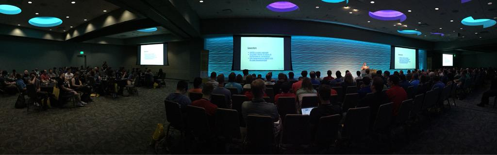
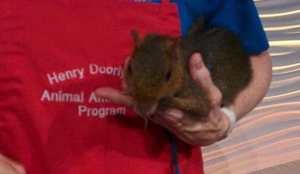
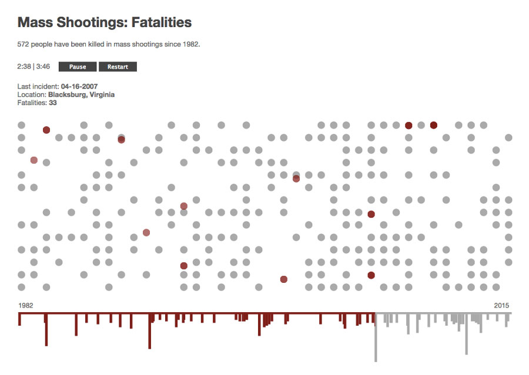

The Sixth Month is over already? For real??
That's baffling.
Anyway.
I've had a bit of a breakthrough in the last four weeks. I wrote a Source post, gave a solo talk to a 200+ person audience, and finally made something cool – so I'm feeling pretty productive and gaining some confidence when it comes to sharing the stuff I've been working on.
I've also been applying for a handful of things – grants, hack events, etc. – because I've started to realize that this fellowship isn't going to last forever (sadness) and I need to make the most of the remaining four months and figure out what to do after it's over.
I think grad school is up next for me, but that leaves a six-month gap that I need to fill with either freelance work or possibly a grant-funded project. We'll see. If anyone knows of some short-term opportunities, please let me know!
In the meantime, here's what I've been up to in the last month:
Events
Portland Code Convening
Nebraska JavaScript Conference (#NEJSConf)
 Photo by Zach Leatherman.
I was invited to speak at the first-annual NEJS Conf, which was held in Omaha on Aug. 7. The conference was much larger than I expected when I initially submitted my session proposal – turns out it was a single-track event with more than 200 attendees and some first-rate keynotes including Ethan Marcotte (AKA the guy who single-handedly started the responsive web design movement). I may have been a little intimidated.
It was also the first time I had ever been invited to a "speakers dinner" – and this one happened to involve a limousine and steaks. Totally unnecessary. Still pretty awesome.
The event itself was great; everything went off without a hitch. It was held at the Omaha Zoo, so during breaks between speakers they brought in animals, including this adorable little guy named Garbanzo.
 Garbanzo the Green Acouchi. So cute. Photo by Dave Reid.
I was not in the best headspace before giving my talk, but it turned out OK. I walked through these slides and then gave a demo of my mass shootings piece...which really took down the mood (whoops) but was impressively effective at eliciting an emotional response from the audience. I was excited about that.
Afterwards, Ethan said some really nice things and totally made my day.
@nejsconf:
I have done basically nothing with dataviz, but @julia67’s #nejsconf talk already has me wanting to check out Snap.svg.
— Ethan Marcotte (@beep) August 7, 2015@nejsconf:
@julia67’s animated, audio-enhanced timeline of mass shooting fatalities. Wow. #nejsconf
— Ethan Marcotte (@beep) August 7, 2015
...I'm only a little star-struck. Ha.
It was also really awesome talking to a bunch of folks about the Knight-Mozilla fellowship after the event. I hope some of them were conviced to apply!
Projects
In Progress: Animated Data Sonification
An interpretation of Mother Jones' data on mass shootings in the United States since 1982.
I am really happy with how this project is turning out. It's a totally custom visualiztion. It's minimal. It's emotive. It works well. And it gave me a reason to experiment with three things that had been on my bucket list for awhile:
I still need to clean up the code and make some usability enhancements. I'd also love to make a mobile-specific (vertical) layout.
Erin Kissane asked me to write a Source post on it – so be on the lookout for that!
Presentation: Animation Basics with Snap.svg
Check out the Slides.
In Progress: Data Viz for All & DVfA Components
Check out DVfA and DVfA Components on GitHub. You can also read about the project on Source: Building on Data Viz for All.
News
Massively cool stuff coming up:
- Hacks/Hackers Buenos Aires Media Party 2015: I'll be presenting on SVG animation and DVfA.
- Fellows Hack Week: Working from Argentina!